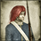
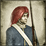

Requires
Enables
- Buildings:

- Units:


 



Spawned Garrisons
- Units:
Basic Building Statistics (can be modified by difficulty level, arts, skills, traits and retainers)
- Cost: 3800
- Recruitment capacity (units in training): +1
- -1 to happiness from modernisation
Clan Effects
- +2 to modernisation (clan development)
Description
A roof. Regular food. Regular pay. Glory and honour!
A barracks allows the recruitment of modern units in a province. A roof over one's head and regular food are powerful incentives to join the army. Permanent barracks allow a standing army to be maintained in isolation from the civilian population, and any funny ideas that they may have about free speech or democracy. Even revolutionary armies quickly abandon one-man-one-vote as a way of creating discipline and deciding tactics when the bullets start flying. A permanent home for military units allows for a sense of identity, and for professionalism in the ranks, to develop.